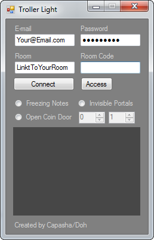

#### NOTICE #####
If you have kongregate, facebook or armorgames the program will not work.
Maybe in the future. Will everything work for those loginmethods.
################

Run the program and write in your details in the fields.
Your room need to be added. Paste the link to your room inside the room textbox.
If you own the room, no code is needed. If else you need to add a code for the room.
To add a portal, frozen note or open coin door. Add or draw this block:
This tool is a light version of the real troll program. You can add freezing notes
-open coin doors, and invisible portals.
############# Q&A ##############
Q: How do I know if the program really works?
A: The program works. If you don't trust me. Try this World
Q: Can I trust you. Does this log my account information? I'm scared.
A: You should trust me. Ask anyone else that use programs created by me.
Q: I can't login. Whats wrong?
A: If you get any error messages. Write an email to capashaa@gmail.com
Q: I have Kongregate/Facebook/ArmorGames. How do I use the program?
A: Right now can't you use the program. Maybe in a later version of this tool
Q: I downloaded this program from another site than capasha.x90x.net. Is that safe?
A: Never download this program from another site than capasha.x90x.net.